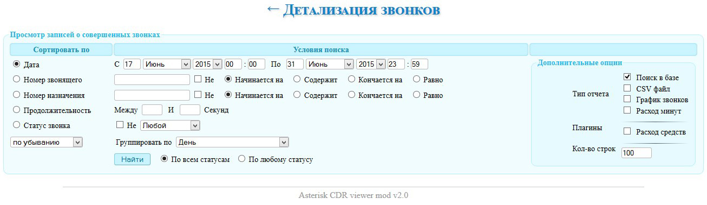
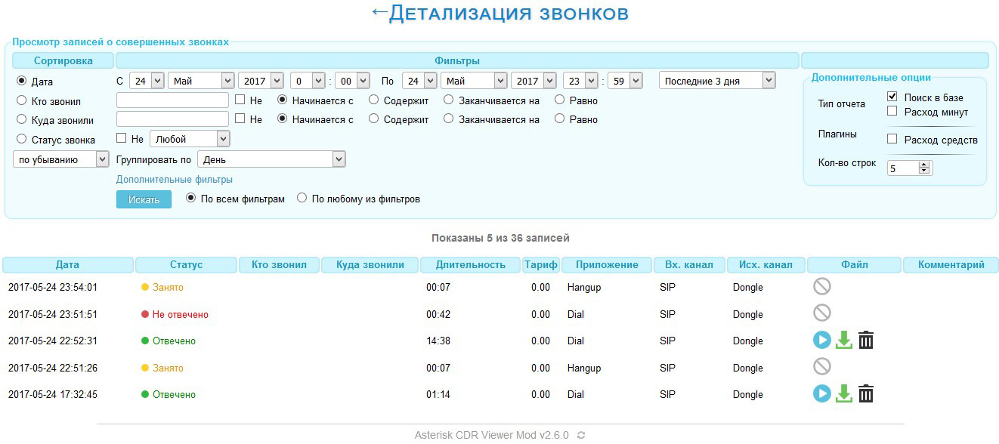
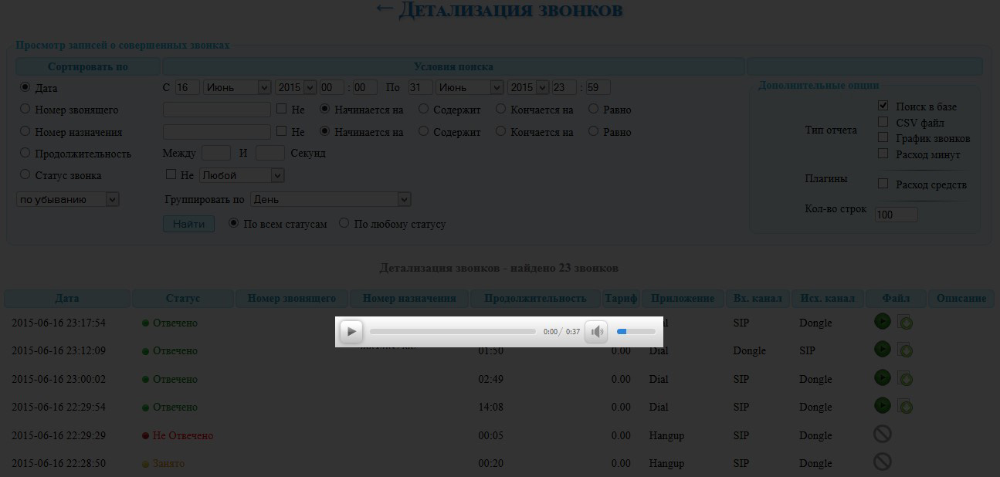
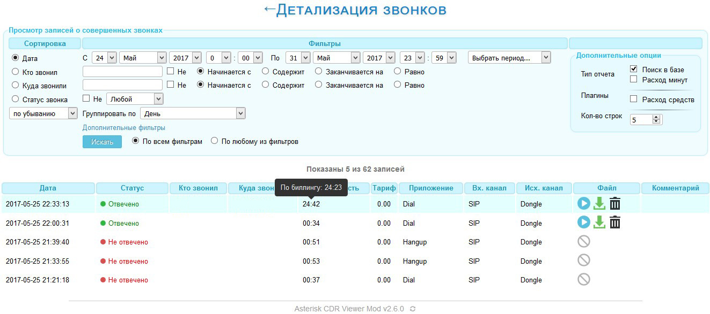
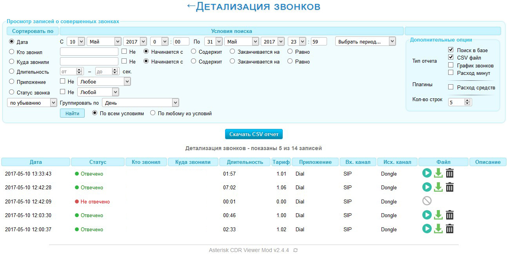
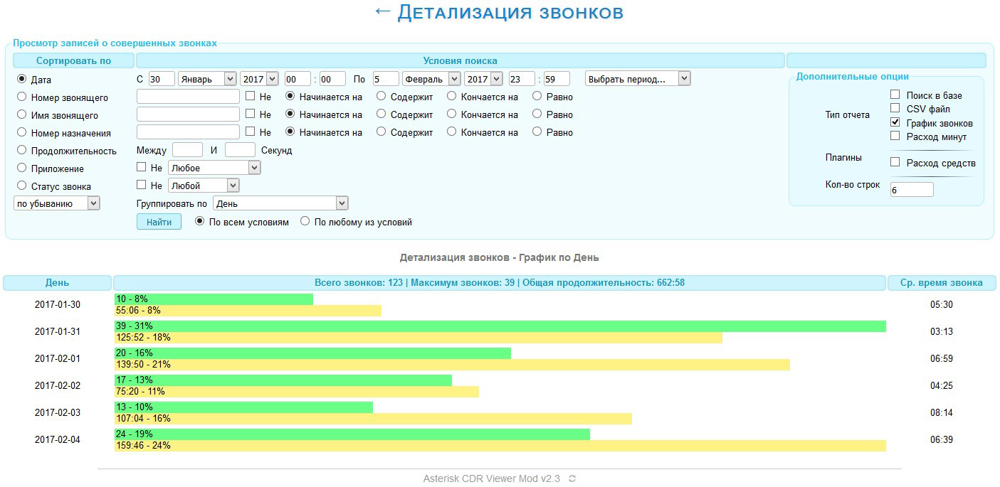
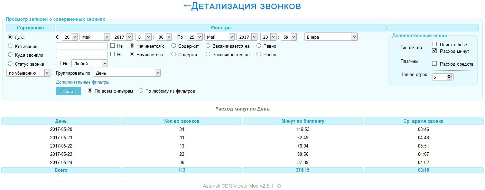
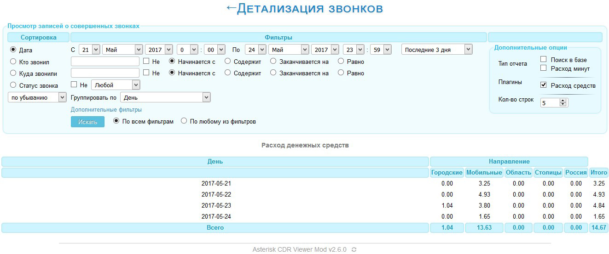

Web-интерфейс для просмотра и прослушивания записей звонков Asterisk
За основу взят одноименный проект на английском языке, который можно найти в интернете. Это его значительно переработанная версия, Asterisk CDR Viewer Mod. Также использовался материал статьи на Хабрахабре, автор которой FessAectan. За что ему большое спасибо.
Ниже можно прочитать об основных особенностях и посмотреть скриншоты. Подробную информацию о том, как все установить и настроить можно найти в файле Readme, который находится в папке docs.
Если нашлись какие-либо баги или недоработки, то оставляйте свои заявки на Гитхабе. Историю изменений можно посмотреть здесь.
Скрипт распространяется под лицензией GNU GPL v3
Основные особенности
- Полностью русский интерфейс
- Обновленный дизайн
- Всплывающие подсказки
- Корректный экспорт записей в CSV файл
- Правильный подсчет стоимости звонков (плагин)
- Просмотр стоимости каждого звонка (плагин)
- Возможность указать нетарифицируемый интервал для правильного подсчета стоимости
- Возможность указать доп. тариф. Например: Стоимость первой минуты 1 руб., далее по 10 коп. (доп. тариф)
- Возможность скрыть некоторые условия поиска и типы отчетов, которые редко используются
- Быстрый выбор периода для отчета. Например: Последние 3 недели
- Имя файла записи звонка хранится в базе
- Возможность прослушивания записи звонка через веб-интерфейс
- На номер телефона можно нажать и получить о нем информацию
- Плеер для прослушивания звонка подгружается через javascript, так что ничего не тормозит
- Если записи звонков архивируются, будет предложено скачать запись
- Если поступил факс, его также можно скачать
- Файлы для скачивания отдаются скриптом с возможностью докачки
- Папка для хранения записей может находиться в любой директории вашего сервера
И еще много всего...
Общий вид

Просмотр записей звонков. Здесь же указана стоимость каждого звонка.

Прослушивание записей

Всплывающие подсказки

Экспорт в CSV

Графики звонков

Длительность звонков

Стоимость звонков
